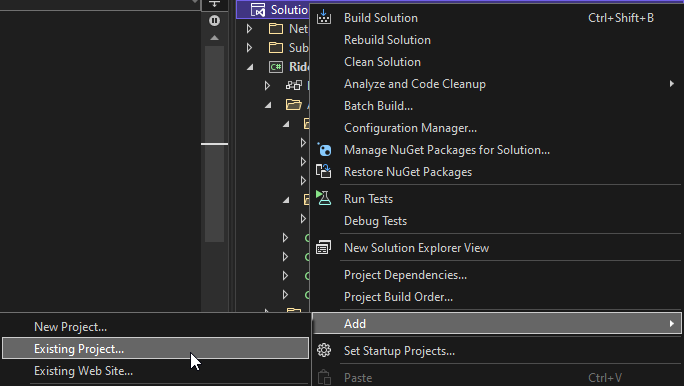
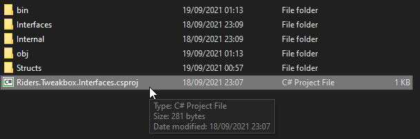
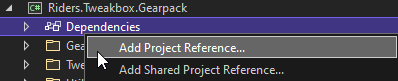
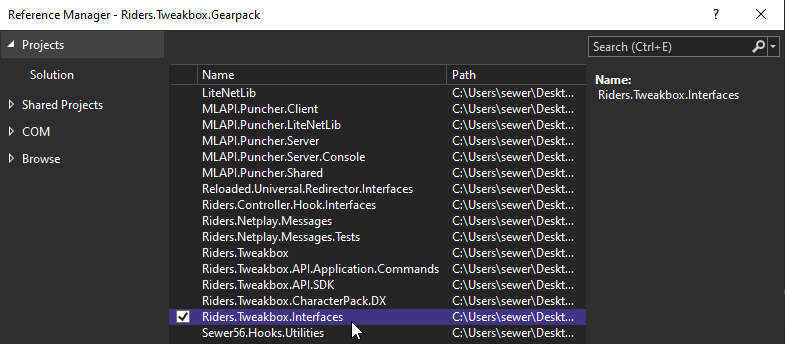
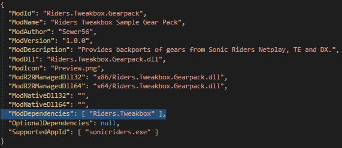

Tweakbox API
Starting with version 0.7.0, Tweakbox offers a built-in API which allows you to control Tweakbox functionality as well as perform certain other operations which affect the state of the game.
Getting Started
Setup usually takes around 2 minutes if you know what you're doing. If you're new to programming however, it might take you a while, be patient!
Create a Reloaded-II Mod.
Refer to the Reloaded-II wiki ("Building Mods") for guidance.
Clone this repository.
git clone --recursive https://github.com/Sewer56/Riders.Tweakbox.git
or add as git submodule
git submodule add https://github.com/Sewer56/Riders.Tweakbox.git
git submodule update --init --recursive
Add Riders.Tweakbox.Interfaces to your project.
First add it to your solution by right clicking it. 
and find Riders.Tweakbox.Interfaces.csproj

Then, add it as a project dependency to your Reloaded-II mod. 

Add Riders.Tweakbox as a Reloaded II dependency.
Edit your project's ModConfig.json to include Riders.Tweakbox as part of the ModDependencies.

Consume the Tweakbox API
In your Start function of the mod, grab an interface to the R-II.
// Get the API Controller
_modLoader.GetController<ITweakboxApi>().TryGetTarget(out var apiAccessor);
// Register to the tweakbox API
var api = apiAccessor.Register($"{config.ModId}.{config.ModVersion}");
// Use the API
var gearApi = api.GetCustomGearApi();
gearApi.RemoveVanillaGears();
More Information
Reloaded-II Documentation on Controllers
Example Usage
For more examples, consider looking at the example Riders.Tweakbox.Gearpack and Riders.Tweakbox.CharacterPack.DX projects contained in this repository.
Get Updated Pointers
Tweakbox rewrites some game code to make features such as custom gears possible. Therefore, some fields in libraries such as Sewer56.SonicRiders will need to be updated.
To obtain the updated pointers, use the GetPointers method.
// Update Gear Data Pointer
var pointers = modImpl.GetPointers();
Sewer56.SonicRiders.API.Player.Gears = new FixedArrayPtr<ExtremeGear>((ulong)pointers.Gears.Address, pointers.Gears.NumItems);
Add a Custom Gear to the Game
// ICustomGearApi obtained via api.GetCustomGearApi();
public class BlueStarIIDX : CustomGearBase, IExtremeGear
{
private BoostProperties _boostProperties = new BoostProperties()
{
AddedBoostChainMultiplier = 0.15f,
AddedBoostDurationLv3 = 30
};
/// <summary>
/// Initializes this custom gear.
/// </summary>
public override void Initialize(string gearsFolder, ICustomGearApi gearApi)
{
// Import a custom gear exported from the built-in `Export Custom Gear`
// function in the gear editor.
var data = gearApi.ImportFromFolder(Path.Combine(gearsFolder, "BlueStarII DX"));
// Attach a class that overrides gear behaviours (via IExtremeGear)
data.Behaviour = this;
// Add the custom gear to the game!
gearApi.AddGear(data);
}
// IExtremeGear API Callback
public BoostProperties GetBoostProperties() => _boostProperties;
}
If you need to get the location of your mod's folder...
// In your mod's `Start` method.
_modLoader.GetDirectoryForModId(MyModId)
Modify Character Behaviour (Simple)
public class Sonic : LateBoosterCharacter, ICustomStats
{
private BoostProperties _boostProperties = new BoostProperties()
{
AddedBoostDurationLv2 = 60,
AddedBoostDurationLv3 = 60,
};
/// <summary>
/// Initializes this custom character.
/// </summary>
public void Initialize(Interfaces.ICustomCharacterApi characterApi)
{
Request = new ModifyCharacterRequest()
{
Behaviour = this, // Modifies the character behaviour.
CharacterId = (int) Characters.Sonic, // Character Index. See Sewer56.SonicRiders.Structures.Enums.Characters
CharacterName = "Sonic DX",
Stack = false // Does not combine with other mods.
};
// Modify your character!
characterApi.AddCharacterBehaviour(Request);
}
// Overrides for ICustomCharacter interface.
public ApiCharacterParameters GetCharacterParameters() => new ApiCharacterParameters()
{
SpeedMultiplierOffset = 0f
};
public BoostProperties GetBoostProperties() => _boostProperties;
}
Usage:
// Get API
var characterApi = api.GetCustomCharacterApi();
// Add character
var sonic = new Sonic();
sonic.Initialize(characterApi);
Modify Character Behaviour (Clean)
Here's an example of how you could implement character 'archetypes'/'classes' (categories) for a cleaner approach.
Base Character Class:
public abstract class CustomCharacterBase : ICustomCharacter
{
public ModifyCharacterRequest Request { get; private set; }
public abstract string Name { get; }
public abstract Characters Character { get; }
/// <summary>
/// Initializes this custom character.
/// </summary>
public void Initialize(Interfaces.ICustomCharacterApi characterApi)
{
Request = new ModifyCharacterRequest()
{
Behaviour = this, // Modifies the character behaviour.
CharacterId = (int) Character, // Character Index. See Sewer56.SonicRiders.Structures.Enums.Characters
CharacterName = Name,
Stack = false // Does not combine with other mods.
};
// Modify your character!
characterApi.AddCharacterBehaviour(Request);
}
}
Define the character class:
// An implementation of Sonic Riders DX 1.0.0 Late Booster Character
public abstract class LateBoosterCharacter : CustomCharacterBase, ICustomCharacter
{
// These are all callbacks for the ICustomCharacter interface.
private BoostProperties _boostProperties = new BoostProperties()
{
AddedBoostDurationLv2 = 60,
AddedBoostDurationLv3 = 60,
};
public ApiCharacterParameters GetCharacterParameters() => new ApiCharacterParameters()
{
SpeedMultiplierOffset = 0f
};
public BoostProperties GetBoostProperties() => _boostProperties;
}
Give the character that class (via inheritance):
public class Sonic : LateBoosterCharacter, ICustomStats
{
public override string Name { get; } = "Sonic DX";
public override Characters Character { get; } = Characters.Sonic;
}